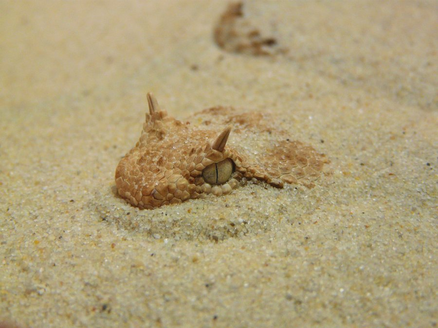
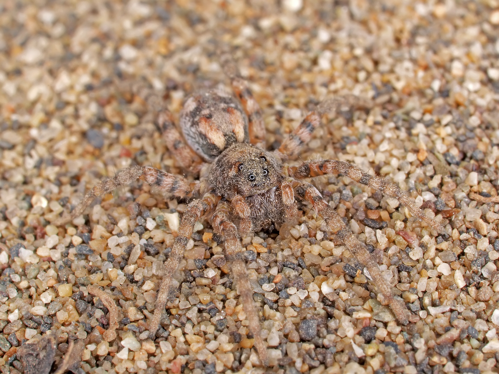

In timp ce unele folosesc venin, unele ataca cu o viteza incredibila, iar altele folosesc lucrul in echipa. Totusi toate au metode ingenioase de a vana, a se apara si a ucide. Cateodata noi intram in lumea lor, dar intram prea mult si ajungem mult prea aproape, ajungand la rezultate fatale. Printre toate metodele acestea ingenioase la majoritatea animalelor din desert, a ucide inseamna a stapani arta ambuscadei.
Camuflaj in desert
 
Vi se vor prezenta acum cele mai periculoase animale din desert. Daca te intalnesti cu acestea, sigur o sa vrei sa o iei la fuga. (#1 fiind cel mai periculos)
#1 Serpi
Serpii pot fi găsiti în locuri calde peste tot în lume și
da, ei pot fi găsiti în deserturi, de asemenea. De fapt, există mai multe
specii de serpi veninosi ascunse în nisipurile deșertului.
Serpii cu clopotei (Rattlesnakes) sunt printre cei mai populari, numiti astfel pentru
clopoteii de la
sfârșitul cozii lor, pe care ii zdruncina în semn de avertisment. Ignoră avertismentul și ghici
ce? Ai putea fi mort în câteva secunde. Într-adevăr, în timp ce 20% dintre muscaturile de șarpe
cu clopoței sunt „uscate“ (sau fara venin), din cele mai multe dintre ele se poate injecta o cantitate bună de
toxine în sânge,
care poate duce la complicații de sănătate și cel mai rău caz, moarte, daca nu sunteti tratat.
In Sahara, vipera de desert cu horn si vipera cu solzi-fierastrau sunt cele de care trebuie sa te temi.
În deserturile din America de Nord, vederea unui Sidewinder - numit astfel pentru obiceiul său de aluncare
laterala pe
nisip - și a unui șarpe de coral din Arizona ar trebui să te trimită fugind în direcția opusă.
#2 Scorpioni
Serpii nu sunt singurele animale de desert veninoase. Scorpions sunt, de asemenea. Din acestia, scorpionul deathstalker este cel mai bine cunoscut. Doar numele său este suficient pentru a vă oferi un fior, și si-a facut aceasta reputatie cu un venin puternic. In timp ce veninul este rareori letal, mușcătura unui deathstalker poate fi extrem de dureroasa.
#3 Paianjeni
În primul rând, șerpi, apoi scorpioni. Ce urmeaza? Paianjeni, desigur. Păianjenii supraviețuiesc în deșert prin vizuini sau ascunzatori sub pietre în timpul zilei, apoi ies noaptea în căutarea hranei. Păianjenul Redback este un exemplu. Echivalentul australian al văduvei negre, păianjenul Redback este responsabil pentru mai mult de 10.000 de mușcături de paianjen din Australia in fiecare an. In timp ce muscatura lui poate fi la fel de dureroasa ca o simplă înțepătură, umflarea, greață, dureri abdominale, transpirații și dureri de cap apar, în general, și, dacă nu sunt tratate, muscatura poate fi chiar fatala.
#4 Albine africane
Auzi un bâzâit cand te plimbi prin desert? Nu-l ignora. Este posibil să provina de la albinele africanizate, iar ele nu sunt numite „albine criminal" pentru nimic. Albinele africanizate tind să roiască și când sunt amenințațe, chiar de la o distanță indepartata, întregul roi va ataca, te urmăreste și te înțeapa peste tot. Ce poti face? Cauta adăpost cat poti tu de repede, în timp ce iti acoperi fața. Adapostul este o problemă în deșert, totusi, așa că va trebui să te rogi să nu fi alergat de catre aceste albine!
#5 Cangurul rosu
În deșerturile din Australia trăiesc cangurii roșii, cei mai mari dintre toti cangurii. Ei pot supraviețui în deșert prin conservarea apei - rinichii lor le permit să secrete cât mai puțina urina posibila - și prin salt, care conservă energia. De asemenea, ei se odihnesc în timpul zilei, ies numai de la asfințit până în zori, pentru a evita caldura. Cangurii roșii sunt ierbivori, dar asta nu înseamnă că nu atacă oamenii. Cangurii rosii sunt cunoscuti datorita loviturilor lor cu piciorul, atunci când sunt amenințati. Cu picioarele lor puternice, care ii mențin în formă si pot țopăi toată ziua, și cu ghearele lor ascuțite pot provoca accidente grave.
#6 Soparla Gila
Gila (Heloderma suspectum) este una dintre cele doua soparle veninoase care mai
traiesc in prezent. Este raspandita in deserturile si zonele aride din sud-vestul Statelor
Unite si ale Mexicului. Majoritatea dintilor soparlei Gila au santuri prin care se scurge fluxul
de venin. In momentul in care Gila musca o prada sau un dusman natural veninul nu este injectat prin dinti,
ca la serpi, ci se scurge prin aceste santuri fiind injectat prin miscarile convulsive de masticatie ale acestei
soparle.
Din cele cateva soparle veninoase din lume, monstrul Gila este cel mai bine cunoscut.
Găsit în Mojave, Sonoran si deserturile Chihuahuan, aceasta șopârlă lentă cheltuie 90% din timpul său in
subteran, ceea ce înseamnă că este puțin probabil ca vei fi muscat. Cu toate acestea, atunci când o fac,
monștrii Gila
musca cu înverșunare, fără a da drumul. Va trebui să-l scufundati în apa, care este greu de găsit în deșert,
pentru a-l face sa va
dea drumul. Inutil să spun, muscatura este dureroasa. Totusi, nu este fatală, din moment ce monstrul Gila
produce o cantitate mică de venin.